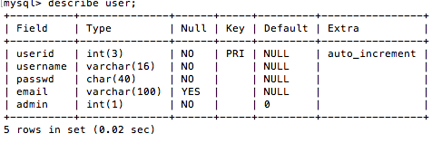
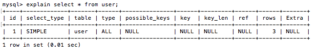
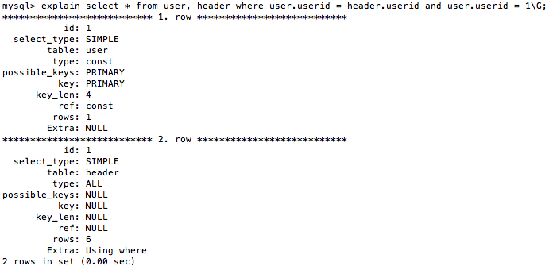

Describe, Explain, Backup and Restore - MySQL Relational Database
In this section we are going to be focusing on database optimization, backups and restoration. One way to understand why a query isn't working properly is by using the explain command. We can detect how our program is trying to select the data and remove unnecessary steps to make it work faster.
Describe and Explain
First let's look at the describe command and see how it works. Look at the example below.
Code:
-- select the bookmarks database
use bookmarks;
describe user;

This command basically looks at the different fields in the table, identifies them and describes the types of values each field can hold. If we look at the first field its called 'userid', we know its an integer which can hold '3' places of digits, its also a primary key, the default value is null, and it auto_increments itself. Now, let's perform a simple query and use explain to understand how it works.
Code:
-- explain what this query does
explain select * from user;

Let's look at each of the fields and understand what they mean, first let's start with id. That just refers to the id of the select statement, there are queries that have multiple select statements, so this refers to the first one. Next we have the type of select being used, it's simple which refers to a simple select statement. Select statements can also be of type: Primary, Union, Dependent Union, Union Result, Subquery, Dependent Subquery, Dervied, Materialized, Unreachable subquery and Uncacheable Union. The table refers to the table being used for the select query. Type describes the type of joins which can be used by this query, in our example it's ALL, so every column was scanned because we used the '*' astrisk star to scan all rows. Let's look at another example quickly before I finish describing the fields.
Code:
-- explain this query
explain select * from user, header
where user.userid = header.userid and user.userid = 1;

In this example we query 2 rows, and notice the differences between the first and second row. The first query performed was to select all the rows from user where userid was equal to one. So the type is different this time, its a constant type because, it is only checking the rows and seeing if the value of userid is equal to one. Next it checks to see which table it will be using for the join's primary key. We used the row userid from the table user, so it changes the possible_keys field to primary for that query. Let's look at key_len now, that refers to the amount of rows returned from both tables, its four. So there are four rows which have an identical primary key 'userid' equal to one. We went over the reference which is the same as the type, its the constant userid. And finally we see how many rows were matched with the query, in the first we know just one row was returned which matches that primary key. Yet, the second table has 6 rows which need to be evaluted first before selected the ones which match with that key. This might seem like a lot of unnecessary information, but it will be important when running larger select statements. Now, let's take a look at how to create a backup of our database and restore that back up if need be.
Backup and Restoring Databases
Theres three different commands you can use to backup your database. Let's look at all three below. The first method consists of locking the tables and copying the files physically. If you are using xampp the files are located in 'xampp/xammpfiles/var/mysql/'. Below, I will show you how to lock and unlock tables.
Code:
-- lock tables using the read modifier
lock tables user read;
-- unlock tables
unlock tables;
You are allowed to lock more then one table at a time, and you can also lock tables using the write modifier, which allows users to insert or update rows while its locked. Then you could just navigate to where the file is located and copy it (while its locked, to ensure that changes weren't made while you were copying the database file). The second method using the mysqldump command. First exit out of mysql if you are currently running that application from the command line, if not change directory into the binary folder where you would normally run ./mysql. Instead, this time you will be running a different application called ./mysqldump, type in -u (username) -p (database) > "directory/file". I'll show you an example below.
Code:
-- dump contents of database onto command prompt
./mysqldump -u username -p --all-databases
-- dump contents of database onto file called database.sql on desktop
./mysqldump -u username -p bookmarks > "/Users/Username/Desktop/database.sql"
If you want to restore your databases, you can just paste the files you initially copied the if you used the first method. However, if you used the ./mysqldump program, then you would need to first create the database in the command line like you would normally do, and then just copy the contents of the sql file and past it in. All the tables should be created with the data inserted into the rows.
Code:
-- open mysql again
./mysql -u username -p
-- create the same database name
Create database bookmarks;
-- copy the contents of the dump file and paste it
-- should say -- Dump completed on date and time
-- check to ensure that tables are created correctly
use database bookmarks; show tables; describe user;
Previous Page